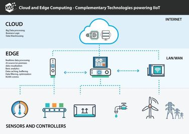

El fin de la latencia en el desarrollo Full Stack

El Edge Computing representa un cambio de paradigma en la arquitectura de internet, moviendo el procesamiento de datos desde centros de cómputo lejanos hacia el "borde" de la red, lo más cerca posible del usuario final. Tradicionalmente, cuando un usuario interactuaba con una web, la solicitud debía viajar miles de kilómetros hasta un servidor central, procesarse y volver, lo que generaba una latencia perceptible. Con la tecnología Edge, la lógica de negocio y el renderizado se ejecutan en nodos locales distribuidos globalmente, permitiendo que las aplicaciones respondan de manera casi instantánea, independientemente de la ubicación geográfica de la persona.
Para los desarrolladores Full Stack, esto significa aprender a trabajar con "Edge Functions". Estas son pequeñas piezas de código asíncrono que se ejecutan en el momento de la solicitud, permitiendo personalizar el contenido, gestionar la autenticación o manipular cabeceras de seguridad sin llegar nunca al servidor de origen. Esta eficiencia no solo mejora la experiencia del usuario (UX), sino que impacta directamente en el SEO, ya que los motores de búsqueda priorizan los sitios con tiempos de respuesta ultra-rápidos, convirtiendo al Edge Computing en una herramienta indispensable para cualquier proyecto de alto rendimiento.
Sin embargo, el despliegue en el borde también plantea retos en la gestión de la consistencia de los datos. Al estar la información distribuida en cientos de puntos, asegurar que todos los usuarios vean la misma actualización al mismo tiempo requiere una sincronización precisa y un diseño de bases de datos distribuido. Dominar estas técnicas de "propagación" y el manejo de estados globales es lo que define a los arquitectos web de la nueva era, quienes deben equilibrar la velocidad extrema con la integridad absoluta de la información.
Nuestra visión: En Conquer Academy, somos conscientes de que el futuro de la web reside en eliminar las distancias físicas. Por ello, capacitamos a nuestros alumnos para que dejen de ver el servidor como un punto fijo y empiecen a dominar arquitecturas distribuidas, garantizando que sus aplicaciones ofrezcan una respuesta instantánea y global, sin importar dónde se encuentre el usuario.